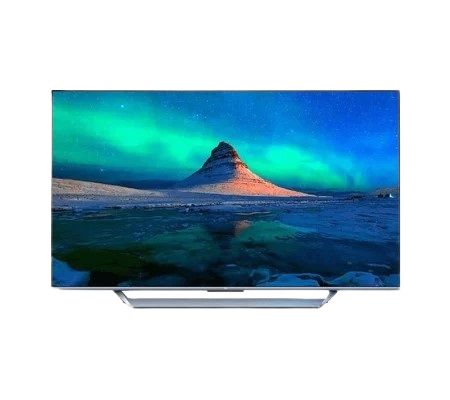

Xiaomi frappe fort sur le secteur de la télé 4K. Le fabricant chinois vient de dévoiler la Mi TV Q1 75, une télé QLED 4K UHD de 75 pouces proposée à la vente à prix (très) doux. Angle de vision 178°, 120 Hz, HDMI 2.1, 100% de la palette colorimétrique NTSC, 192 zones de rétroéclairage, contraste de 10 000:1, Chromecast, Dolby Vision et HDR10+ composent le menu technique de cette dalle franchement haut de gamme.
Difficile d’y trouver à redire, d’autant plus que la partie son n’est pas oubliée avec 6 HP délivrant une puissance sonore de 30W, le tout compatible Dolby Audio et DTS-HD. Sans surprise, l’appareil fonctionne sous Android TV, et les apps Netflix, Amazon Prime Video et YouTube sont préinstallées. Le plus beau pour la fin : le Mi TV Q1 sera disponible en France au mois de Mars au prix canon de 1299 euros.